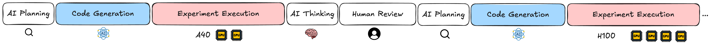
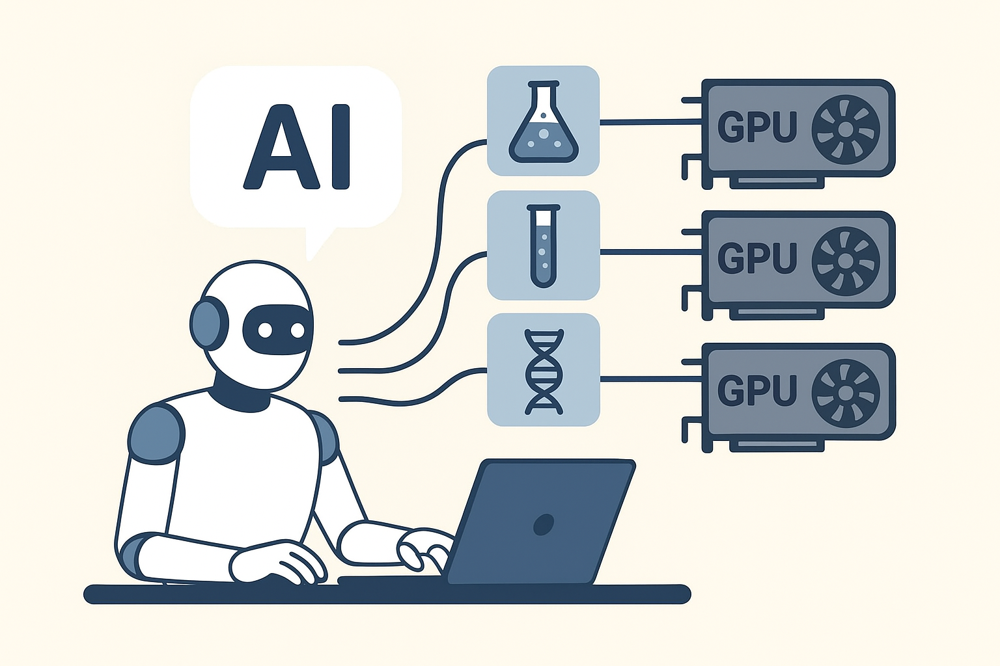

My Experiment Agent Had a GPU Problem. It Led Me to "Agent-Oriented Compute."
How to design the most native infrastructure abstraction for AI agents to conduct scientific experiments?
Building an AI Agent for Scientific Discovery
This year, I've been building AI agents that run scientific experiments. Not toy examples — actual research. Imagine you have a question like, "How does weight quantization really affect the reasoning ability of different layers in a transformer model?"
To answer that, you need to run lots of experiments. You form a hypothesis, design an experiment, run the code, observe the results, refine your hypothesis, and repeat. It's the core loop of empirical science. My agent was designed to help automate and accelerate this loop.
But beyond the agent's intelligence (its self-evolving ability), reproducibility, and scientific rigor, the biggest challenge I've faced is computational agency — how efficiently an AI can control and use compute resources to run different scientific experiments?
The Problem with "Putting an Agent on a GPU"
In my lab, I had a cluster of A40 GPUs. Easy solution, right? Just point the agent at my local GPUs and let it rip. Except… it was terrible. Here's why:

Problem #1: The Idle GPU Problem
An AI agent doesn't just spawn a training job and vanish. It thinks and plans. It generates code. Sometimes it waits for me to review its approach. During all this time? The GPU just sits there. Idle.
Problem #2: The Scalability Problem
Say the agent wants to test five different experiment setups. With one local GPU node, it has to run them sequentially. The obvious alternative is to make the agent smarter about infrastructure. You could try to embed a resource scheduler, forcing the agent to learn how to choose the right compute and submit jobs. But this can be heavy. It burdens the agent with a secondary task, distracting it from its primary goal of scientific discovery. The best interface for an agent is generating code; we need a way for it to access massive parallelism with the absolute minimum change to that code.
Problem #3: The Hardware Ceiling
My lab had A40s. They're great, but what if my agent's research path led it to a hypothesis that required a more powerful H100? Or maybe a CPU-intensive task? I was stuck. The agent was locked into the specific hardware I had on hand. True scientific inquiry demands the flexibility to use the right tool for the job, moving from cheap, simple experiments for early ideas to massive, rigorous evaluations later. My agent was stuck in a golden cage — powerful but inflexible.
Agent-Oriented Compute
The solution that felt most natural — and the one I've started calling Agent-Oriented Compute — is simple: the agent itself lives in a lightweight, cheap sandbox. It does its thinking and planning there. But the moment it needs to run a serious experiment — training a model, running a simulation, processing data — it doesn't do it locally. Instead, it packages the job and dispatches it to a serverless compute platform with minimal code change.

This is what I call Agent-Oriented Compute: compute infrastructure designed around the natural workflow of AI agents, not legacy assumptions about how jobs should run.
Why This Matters
I think we're at this weird inflection point. We're building increasingly capable AI agents, but we're forcing them to use compute infrastructure designed for humans submitting computational jobs. (Another counter-example is letting an AI agent control the browser the way humans do.)
Agent-Oriented Compute isn't just about efficiency (though that's huge). It's about unlocking what agents can actually do: faster iteration, parallel exploration, dynamic resource scaling — the stuff that turns "this agent is impressive" into "this agent just did six months of research in a weekend."
The Bottom Line
Is my solution perfect? Probably not. Am I being critical enough of my own idea? Maybe not. But I know this: the moment I switched to this serverless approach, my agent went from frustrating to actually useful.
This serverless compute paradigm is what enables our agents to do the ambitious things we keep promising they'll do.
How to Cite
If you found this blog post helpful, please consider citing it:
@misc{liu2025agentcompute,
title={My Experiment Agent Had a GPU Problem. It Led Me to "Agent-Oriented Compute."},
author={Liu, Jiachen},
year={2025},
month={October},
url={https://amberljc.github.io/blog/2025-10-9-agent-oriented-compute.html}
}